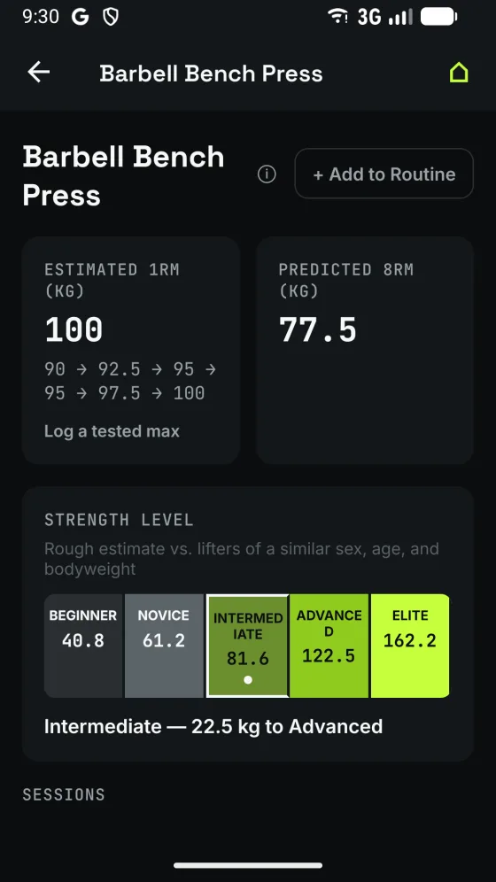
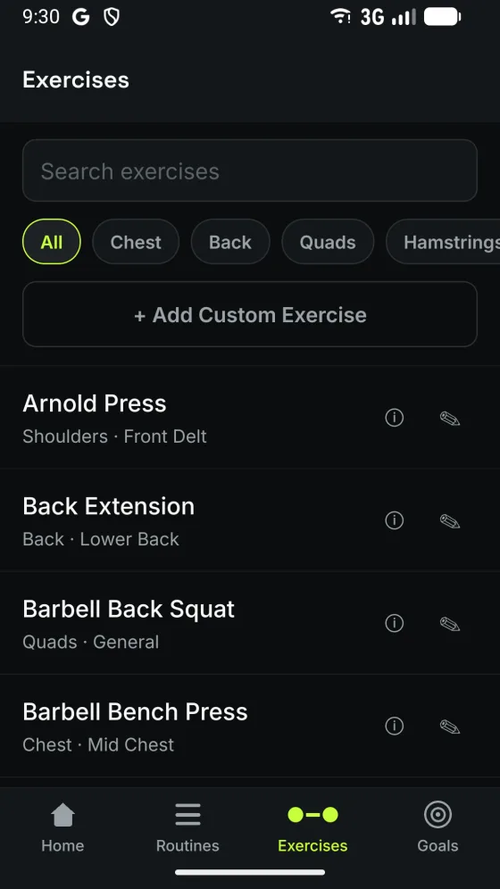

Tells you what to lift next, based on what you actually lifted last.
Most training apps are a logbook. You write down what you did, and deciding what to do next is still your problem. LiftMax does that part for you.
Android · in closed testing
Next session
Barbell Bench Press
82.5 kg · 4 × 8
From your last 3 sessions and your estimated 1RM trend — rounded to a load you can actually build.
These are the sessions it is reading. Change them and watch the prescription move.
- 1
- 2
- 3
- Estimated max
- Trend
- Warm-up
Running the app's own formulas, not a mock-up of them. Two simplifications: each session here is summarised by one set where the app grades every set you log, and the per-lift personalisation — your rep-max curve, your reps-in-reserve bias — needs more history than three sessions, so it sits at the population default.
How it decides
Every set you log updates an estimated one-rep max for that exercise. Prescriptions come off the trend across recent sessions rather than a single good day, so one heavy session doesn't send the next one somewhere you can't follow. The newest session carries four sevenths of the answer, the one before it two, the one before that one — no single rating can ever be more than about half of it.
It also learns how you rate effort. Reps-in-reserve judgement is a skill, and most lifters under-rate what they have left — which quietly drags every prescription too light. LiftMax measures your personal bias and corrects for it.
Come back after time off and it backs the load off
Not by waiting for you to prove the loss with a bad session — by the calendar, before you lift. Under ten days nothing happens, because strength is the slowest thing to decay and a holiday costs almost nothing. Past six weeks it stops scaling, because the loss is no longer predictable from time alone and your next few sessions are better evidence than any curve.
What it looks like



Built for the gym, not the spreadsheet
Weights you can actually load.
The model asks for 83.7 kg. What you get depends on what the weight is made of:
- Barbell2.5 kg steps82.5
- Dumbbell2 kg steps84
- Kettlebell4 kg steps84
- Pin stack5 kg steps85
A pound gym gets its own table, not a conversion of this one — 2.5 kg is 5.5 lb, and no barbell anywhere makes that.
Knows when a lift has run out of room.
Mark the top of the rack or the last pin on the stack, and it stops prescribing past what the equipment holds — and says so, rather than letting the weight sit still for weeks looking like a plateau.
“This is the most weight you've said this exercise can be loaded to, so it stays there — add reps or find a heavier setup to keep progressing.”
- Warm-up sets calculated before your first working set — a three-rung ramp onto the same plate grid, and nothing at all below a load that doesn't need one.
- Over 200 exercises, with your own additions alongside them, and a how-to guide on every one.
- 18 routine templates — body parts, splits, or built around the equipment to hand.
- Per-exercise overrides when the standard progression doesn't suit a lift.
- Personal bests and goals, and where a lift sits against general strength standards.
- Log past workouts you did away from the app. Kilograms or pounds.
Your data stays yours
No account. No sign-up. No ads.
Everything you enter — your profile, workouts, routines and history — is stored in a database on your own device. There is no server holding your training history, because there is no server. Back up and restore to storage you control, and erase everything from within the app whenever you want.
Anonymous crash reports are sent to help fix bugs. They contain technical diagnostics only — never your training data. Details are in the privacy policy.
Support
Questions, bug reports and feature requests all go to one inbox, and a person reads them.
If you're reporting a bug, the Contact Us button in the app's Settings fills in your build number automatically — that makes it much easier to track down.